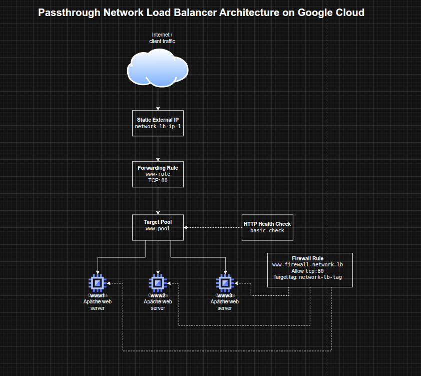

Configuring a Passthrough Network Load Balancer on Google Cloud
Configuring a Passthrough Network Load Balancer on Google Cloud
Timeline: December 2025
Role: Cloud Engineer
Skills: Google Cloud Load Balancing, Compute Engine, Network Load Balancer, Target Pools, Forwarding Rules, Health Checks, Static IP Addresses, Firewall Rules
Project Summary
This project focused on configuring a passthrough external Network Load Balancer on Google Cloud to distribute Layer 4 traffic across multiple Compute Engine web server instances. The implementation involved provisioning a small fleet of Apache-based web servers, exposing them through a firewall rule, assigning a static regional IP address, configuring a health check, creating a target pool, and binding traffic to the backend pool through a forwarding rule.
The project demonstrated the fundamentals of L4 load balancing on Google Cloud, including how traffic is distributed to healthy backend instances without inspecting HTTP content, making it well suited for simple network-level traffic distribution scenarios.
Objectives
- Configure the default region and zone for resources
- Create multiple web server VM instances
- Expose the instances to HTTP traffic with a firewall rule
- Create a static external IP for a load balancer
- Configure a health check for backend validation
- Build a target pool of backend web servers
- Create a forwarding rule to distribute traffic across instances
Architecture Overview
The architecture consisted of:
- Three Compute Engine VM instances (
www1,www2,www3) running Apache - A shared network tag applied to backend instances for firewall targeting
- A firewall rule allowing inbound HTTP traffic on TCP port 80
- A regional static external IP address for the load balancer
- A legacy HTTP health check used to validate backend health
- A target pool containing the three backend instances
- A forwarding rule listening on TCP port 80 and routing traffic to the target pool

Implementation & Highlights
1. Setting Region and Zone Defaults
- Configured the default Compute Engine region and zone for the lab environment
- Established a consistent placement model for the load balancer resources and VM instances
2. Creating Backend Web Servers
- Provisioned three Compute Engine instances:
www1www2www3
- Used startup scripts to install Apache automatically
- Wrote a unique landing page on each VM to make traffic distribution visible during testing
- Applied a common instance tag to simplify firewall targeting
3. Opening HTTP Access with Firewall Rules
- Created a firewall rule allowing inbound TCP port 80
- Scoped the rule to instances with the shared network tag
- Verified that each VM responded successfully over HTTP using its external IP address
4. Creating the Load Balancer Frontend
- Reserved a static regional external IP address for the load balancer
- Created an HTTP health check resource to monitor backend availability
- Prepared the frontend entry point and backend validation mechanism required by the passthrough network load balancer
5. Building the Backend Pool
- Created a target pool for the load balancing service
- Associated the health check with the target pool
- Added all three Apache web server instances to the pool
- Established the backend group that would receive traffic from the forwarding rule
6. Configuring Traffic Distribution
- Created a forwarding rule on TCP port 80
- Bound the forwarding rule to the static IP and target pool
- Verified that traffic sent to the load balancer IP was distributed across the backend instances
- Observed alternating responses from the three servers during repeated curl requests
Design Decisions
- Used multiple small web servers to demonstrate load distribution clearly
- Used startup scripts for lightweight, repeatable server provisioning
- Applied a network tag to backend instances to keep the firewall rule targeted and reusable
- Used a static IP to provide a stable frontend entry point
- Used a health check + target pool model to ensure traffic was only sent to healthy instances
- Chose a passthrough L4 load balancer to focus on network-level balancing rather than HTTP-aware request inspection
Results & Impact
- Successfully configured an external passthrough Network Load Balancer on Google Cloud
- Demonstrated practical use of:
- backend VM groups
- health checks
- target pools
- forwarding rules
- static frontend IPs
- Verified that the load balancer distributed traffic across multiple instances rather than relying on a single server
- Built a strong foundational understanding of Google Cloud traffic distribution patterns that supports later work with more advanced load balancing architectures
Tools & Technologies Used
- Google Compute Engine – Backend virtual machines
- Apache HTTP Server – Sample web workload
- Google Cloud Network Load Balancer – L4 traffic distribution
- Target Pools – Backend grouping
- Forwarding Rules – Traffic steering
- HTTP Health Checks – Backend health validation
- Firewall Rules – Controlled network exposure
- Static External IP Address – Stable frontend endpoint
Outcome
This project demonstrates the ability to configure a Google Cloud passthrough Network Load Balancer for resilient traffic distribution across multiple backend VMs. It highlights practical skills in Compute Engine networking, health-aware backend design, and Layer 4 load balancing, which are useful for cloud engineering, infrastructure, and network-focused roles.